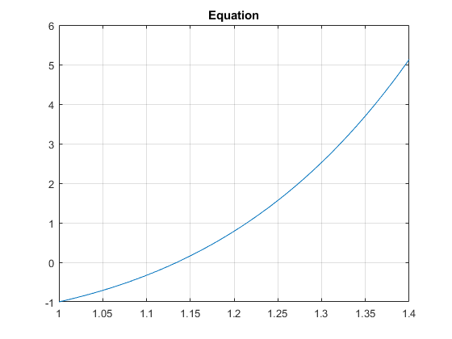
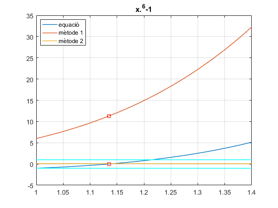

Ex 2, Full_lab4.pdf
Iterative methods: fixed point
Contents
Equation
f = @(x)x.^6-x-1;
Plot
t = 1:0.01:1.4; % With this range we can see where the 0 will be %0:0.1:2; plot(t, f(t)), grid, title('Equation');
Fzero Matlab
alpha = fzero(f,1)
alpha =
1.1347
LOCALITZACIO: b) Feu 3 o més iteracions del mètode de bisecció fins que l < 1/4
a = 1; b = 1.4; c = a+(b-a)/2; valorF = [f(a),f(c),f(b)], l = (c-a)
valorF =
-1.0000 0.7860 5.1295
l =
0.2000
Iterative method #1
g1 = @(x)x.^6-1; dg1 = @(x)6*x.^5; x0 = c; tol = 0.0005; N = 10; %We need to see if it's divergent or convergent. If df(x0) < 1 convergent, %divergent otherwise if (abs(dg1(x0)) < 1) [ root, x_sol ] = new_fixPoint(f,g1,x0,tol,N) tolf = f(x_sol) else disp('Divergent!') end
Divergent!
Iterative method #2
g2 = @(x)(x+1).^(1/6); % diferent f dg2 = @(x) 1./(x+1).^(5/6)/6; x0 = c; tol = 0.0005; N = 10; if (abs(dg2(x0)) < 1) [ root, x_sol ] = new_fixPoint(f,g2,x0,tol,N) tolf = f(x_sol) else disp('Divergent!') end
root =
1.1348
x_sol =
1.2000 1.1404 1.1352 1.1348
tolf =
0.7860 0.0596 0.0052 0.0005
Estudi convergència
y=ones(size(t)); %Simplement dos linies a 1, per veure allo del if de si esta dins plot(t,f(t),t,dg1(t),t,dg2(t),alpha, 0, 'rs', alpha, dg1(alpha),'rs',t,y,'c',t,-y,'c','LineWidth',1), grid, title('x.^6-1') % best per no entrar en conflicte amb el dibuix legend('equació', 'mètode 1','mètode 2','Location', 'best') % Podem veure clarament que la primera esta fora i per tant es divergent % i l'altre no, es convergent i el metode funcion